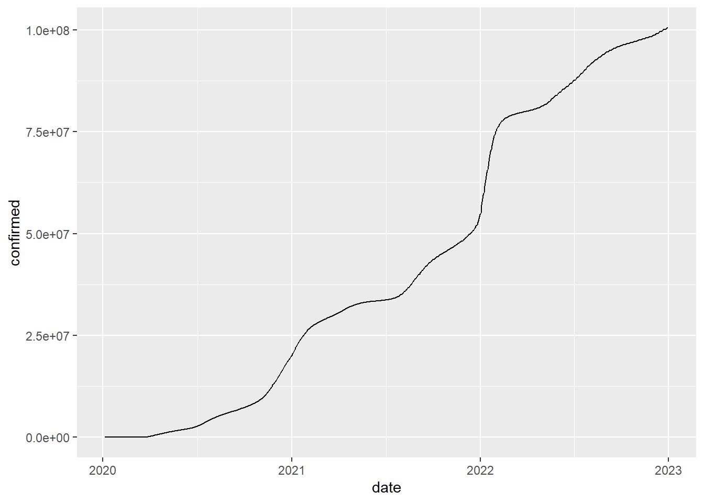
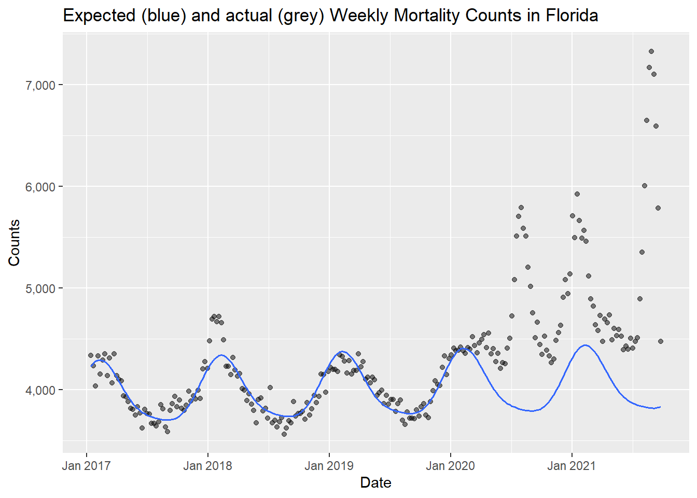
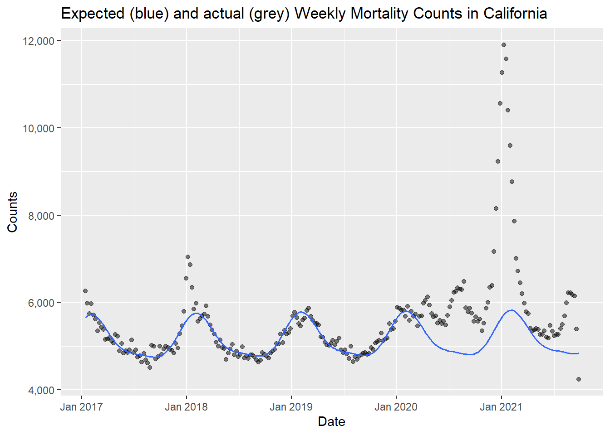

13 applied data science
From the standpoint of applied data science, data analysis should have meaning, and should lead to consequential social or practical consequences. Here, we consider a few examples of applications of data science.
13.1 public health and covid
In Winter 2020, as the COVID-19 pandemic began to take hold, I began chronicling the course of the virus. In a prior version of this book, I wrote the following:
tracking the Novel Coronavirus (from Feb 2020)
Here, I want to consider a timely (but challenging) dataset.
The Novel Coronavirus is an emerging health crisis, particularly in Wuhan (a Chinese city larger than New York City) and the surrounding province of Hubei. It is not yet a threat in the United States - there have, at this writing (02/11/20) been zero cases in Florida. Still, tracking the spread of the virus - the unfolding number of people infected and recovered, as well as the number of deaths - is a fascinating exercise.
I then went on to provide code for accessing data provided by the Johns Hopkins Center for Systems Science and Engineering (JHU/CSSE). The data was initially provided on a GitHub site, then moved to a dashboard here. You can learn more about the efforts of this team here.
13.1.1 COVID data in 2025
Today, there are a number of R packages intended to help analyze COVID data. The COVID19 package provides records of the outbreak on a global scale. Here’s some sample code:
## We have invested a lot of time and effort in creating COVID-19 Data
## Hub, please cite the following when using it:
##
## Guidotti, E., Ardia, D., (2020), "COVID-19 Data Hub", Journal of Open
## Source Software 5(51):2376, doi: 10.21105/joss.02376
##
## The implementation details and the latest version of the data are
## described in:
##
## Guidotti, E., (2022), "A worldwide epidemiological database for
## COVID-19 at fine-grained spatial resolution", Sci Data 9(1):112, doi:
## 10.1038/s41597-022-01245-1
## To print citations in BibTeX format use:
## > print(citation('COVID19'), bibtex=TRUE)
##
## To hide this message use 'verbose = FALSE'.CovidbyDate <- allCovid |>
select(date,confirmed, deaths, recovered, people_vaccinated,
place = administrative_area_level_1) |>
group_by(date, place) |>
summarise_if(is.numeric, sum, na.rm=TRUE)
CovidbyDate |>
filter (date < "2023-01-01") |>
filter(place == "United States") |>
summarize(confirmed = sum(confirmed)) %>%
ggplot(aes(x=date)) + geom_line(aes(y=confirmed))
A second package can be used to examine the impact of COVID more indirectly, but possibly more accurately, by looking at excess mortality data.
13.1.2 a brief digression on causality
Human deaths, like most events, are multiply determined. In the case of COVID, many of those who contracted the disease suffered from other vulnerabilities including diabetes, obesity, pre-existing heart disease, and “old age.” They may have contracted pneumonia as a proximal cause in a pathway that might have included, for example, chronic cigarette smoking -> emphysema -> chronic obstructive pulmonary disease (COPD) -> COVID -> death.
In these cases, like most cases, isolating an individual “cause” can be difficult if not arbitrary, Determinations as to the cause of death may be difficult to make, particularly in an environment in which political or economic considerations may be non-trivial.
13.1.3 the excess mortality package
The R excess mortality package (excessmort) can be used to calculate the expected number of deaths in a region and time period. Among other things, it can be used to estimate the effects of the pandemic on mortality in individual states based on historical data rather than particular diagnoses. You can learn more about the package at https://cran.r-project.org/web/packages/excessmort/vignettes/excessmort.html.
# install.packages("excessmort")
library(excessmort)
exclude_dates <- c(seq(make_date(2017, 12, 16), make_date(2018, 1, 16), by = "day"),
seq(make_date(2020, 1, 1), max(cdc_state_counts$date), by = "day"))
counts <- cdc_state_counts %>%
filter(state == "Florida") %>%
compute_expected(exclude = exclude_dates)## Warning in compute_expected(., exclude = exclude_dates): Including a trend in
## the model is not recommended with less than five years of data. Consider
## setting include.trend = FALSE.## No frequency provided, determined to be 52 measurements per year.## Overall death rate is 10.5.expected_plot(counts, title = "Expected (blue) and actual (grey) Weekly Mortality Counts in Florida")
counts <- cdc_state_counts %>%
filter(state == "California") %>%
compute_expected(exclude = exclude_dates)## Warning in compute_expected(., exclude = exclude_dates): Including a trend in
## the model is not recommended with less than five years of data. Consider
## setting include.trend = FALSE.## No frequency provided, determined to be 52 measurements per year.## Overall death rate is 7.33.expected_plot(counts, title = "Expected (blue) and actual (grey) Weekly Mortality Counts in California")
13.2 other datasets in and beyond R
The datasets library in R includes about 90 datasets of this writing. Many of these (e.g., iris, cars) are ubiquitous in R training; they are typically small and easy to work with.
The Fivethirtyeight and fivethirtyeightdata packages include another 150 or so datasets on politics and popular culture.
A set of 2500+ datasets which are in R packages may be found at https://vincentarelbundock.github.io/Rdatasets/datasets.html (you can find this in a sortable spreadsheet here). These range in scope from the small (“Death By Horse Kicks”, 5 rows and 2 columns) to the large “US Military Demographics”, 1.4 million rows and 6 columns. Please consider explorinfg this site.
The openintro package includes several hundred datasets; they are described here
Note also that the R fivethirtyeight library provides access to a number of clever, clean, and largely manageable datasets, each of which underlies the empirical analyses and reports of Nate Silver and his team (You can learn more at https://data.fivethirtyeight.com/).
Kaggleis a noun (a community, a website, a challenge), and a verb (to kaggle is to participate in a data challenge) which describes a crowdsourced competition to improve on a problem in prediction. Perhaps the first and best known example of this was the Netflix prize (Jackson 2017), which, in 2006, promised one million dollars to the first team to improve the algorithm by which that company recommended movies to its customer base. The competition took several years, and inspired substantial improvements in machine learning as well as in crowdsourced science. At this writing, Kaggle hosts many active competitions - including some with prizes of one million dollars or more.” (Good luck!) Kaggle also hosts hundreds of thousands of datasets. A good place to start is to filter the datasets stored in comma separated value format (.csv) and a usability rating of 8 or more.
Within psychology and behavioral science, the Open Science Framework (OSF) provides a system for hosting and sharing code and data from research articles. One OSF page is a compilation of many datasets from prominent papers in psychology and psychiatry: this now forwards to a spreadsheet which, though it does include data from a number of large and important studies, it appears insufficiently curated, with many dead links.
Outside of psychology, repositories of data from many disciplines may be found at Re3data https://www.re3data.org/.
There are many datasets about music - songs, artists, lyrics, etc. - at millionsongdataset. Note that many of these are quite large, but more accessible datasets are available, including here.
Or just Google datasets.
13.2.1 make/extract/combine your own data
Despite the petabytes (exabytes? zettabytes? yottabytes?) of data in the datasets described above, it’s possible that the dataset that you want to examine does not yet exist. But you may be able to create it, for example, by scraping data from the Web. Typically, you would use an Application Programming Interface (API) to pull data down from platforms such as Twitter or Reddit. For these and other major social media and news platforms, there are R packages which will walk you through the process of getting the data from webpage to tidy dataset. (Be aware, though, that the methods for data access on these platforms frequently changes, so that code that worked a year ago might not work today).
Another source of data is … your own life. If you wear a pedometer or sleep tracker, are a calorie counter or keep other logs as a member of the quantified self movement, consider how such data might relate to aspects of the physical environment (such as temperature, or the time between sunrise and sunset) and/or the broader social and cultural context (a measure, perhaps of the sentiment, or mood, of news articles from papers like the NY Times).
Finally, you might want to combine multiple datasets, such as county-level home pricing data from Zillow (https://www.zillow.com/research/data/), county-level elections data from, for example, here: https://github.com/tonmcg/US_County_Level_Election_Results_08-16, and the boundaries of Woodard’s 11 American Nations (see Lanning). In joining different datasets, or data from different sources, we can go beyond a pedagogical exercise (learning about learning) and contribute new and meaningful knowledge.
13.2.2 keep it manageable
Proceed with caution - many of these datasets are likely to be quite large (for example, analyses of images) and/or in formats that for now are too challenging (JSON). I encourage you to stick with data that are available in a .csv format and that don’t have more than, say, a million data points (e.g., 50,000 observations * 20 variables).
todo: move this chapter to just before text analysis; begins a new section on applied data science and computational social